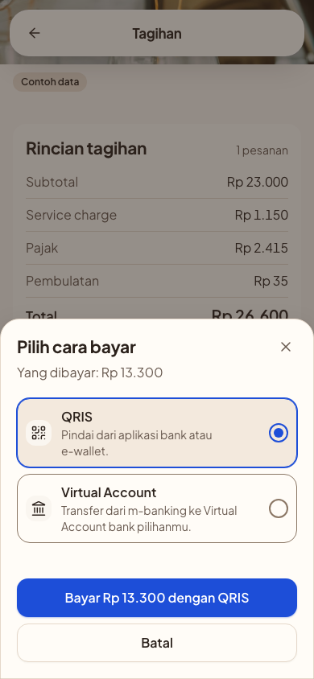

Delapan keputusan yang menunggu Anda
Tiap kartu singkat: apa masalahnya, kenapa penting, dan pilihan. Pilihan bertanda Disarankan adalah usulan tim. Bila ragu, pilih yang disarankan atau tulis catatan.
8 kartu
Q32, Q29, Q19, Q24/Q25, W3, gaji WNA, Q35, Q36
1. Kredit DP di kasus langka (Q32)
Kasus: tamu membayar DP yang dibagi beberapa sesi (misalnya 70% dan 30%), lalu penyedia pembayaran mengembalikan sebagian uang.
Aturan aman: kredit DP dihitung sedikit lebih kecil dari seharusnya. Outlet tidak pernah rugi. Tamu bisa membayar sedikit lebih, dan finance mengoreksinya manual.
Menahan: cabang refund sisa (1033) ikut rilis pertama.
2. Layar apa yang boleh tampil di tablet bersama (Q29)
Tablet bersama dipakai bergantian oleh beberapa karyawan outlet, tanpa akun pribadi.
Usulan tim: Reservasi dibuka, Tanya AI di layar dapur (KDS) dibuka, layar operasional dan fasilitas ditutup.
Menahan: daftar layar tablet bersama belum bisa dikunci sebelum Anda menjawab.
3. Layar kasir bayar sisa (Q19)
Pelanggan sudah membayar DP, kasir menagih sisanya. Bisa dipotong voucher atau poin, menjual tiket fasilitas, dan menangani kartu yang ditolak. Menahan: pengerjaan 936 dan kartu lanjutannya. Contoh data, bukan uang sungguhan.


4. Pengaturan pembayaran Duitku dan bayar tamu (Q24/Q25)
Admin mengatur cara bayar online per metode, dengan cadangan bila metode utama gagal. Kunci tersimpan tidak pernah ditampilkan ulang. Tamu membayar lewat HP. Menahan: cabang Duitku di sisi layar (WS-05). Contoh data, bukan uang sungguhan.




5. Dua keputusan refund (W3)
Menahan: cabang refund sisa (980) dan semua yang menunggunya. Cabang itu sengaja ditahan agar tidak ada uang keluar dua kali.
6. Gaji dan pajak tahun parsial untuk WNA
Kasus: karyawan asing yang bekerja hanya sebagian tahun di Indonesia. Apakah dihitung sebagai subjek pajak tahun parsial?
Sekarang: tidak (aturan aman). Aturan siapa yang masuk satu putaran gaji sudah dikonfirmasi dan dikunci tes.
Menahan: kartu aturan gaji legend-0ytbu tetap terbuka.
7. Baru: test penuh merge pindah ke cloud (Q35)
Sekarang: test penuh tiap batch merge berjalan di Mac. Satu batch sekitar 4 jam, dan Mac penuh sehingga agent dibatasi.
Usulan: pindahkan ke GitHub Actions, dibagi paralel. Perkiraan satu batch di bawah 1 jam, dan Mac punya RAM untuk lebih banyak agent.
Biaya: berbayar per menit untuk repo privat. Ini perkiraan kasar, kira-kira puluhan sampai ratusan dolar per bulan, angkanya perlu dikonfirmasi tim sebelum jalan.
Menahan: percepatan merge lebih lanjut.
8. Baru: rem antrean merge (Q36)
Aturan sekarang (Q11): bila antrean merge lebih dari 20 cabang, hanya kartu rilis atau uang yang boleh mulai.
Usulan: naikkan batas ke 35 selama percepatan merge berjalan, supaya slot agent tidak menganggur.
Menahan: kartu non-rilis baru bila antrean di atas 20.